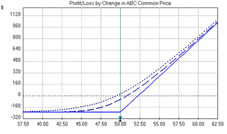

A two-dimensional graphical representation that displays the profit or loss of an option at various prices. The x-axis represents the price of the underlying security and the y-axis represents the potential profit/loss. Often called a "profit/loss diagram", this graph provides an easy way to understand and visualize the effects of what may happen to an option in various situations.
The example above shows the profit/loss potential for a simple long call position of ABC Corp with a February expiration date, strike price of $50.00, contract size of 100 (shares) and a cost of $2.30 per share ($230 total). Notice this graph has three different lines, which represent the profit/loss at three different dates. The dotted line is the profit/loss today, the semi-dotted line is the profit/loss 30 days from today and the solid line is profit/loss on the expiration date (60 days from today). As you can see, as time passes, the time value of the option decreases until it reaches zero, at which point the option-holder has a maximum loss of $230 (the cost of the option contract), which would occur if the option is not exercised. Thus, using these types of graphs, an option-holder can easily view his or her potential profit/loss at or before the expiration date.
{kind=link}